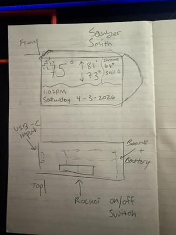

For my final project, I sketched an e-ink weather display designed to sit on a desk or shelf. The idea is to show useful weather info in a simple, low-power format — current conditions, outdoor temperature, and indoor humidity — all without needing to touch your phone.

Who uses it and why?
The main user is someone who wants a quick weather glance without reaching for their phone. Students at a desk, remote workers, or anyone who likes clean minimal devices would get the most out of it. E-ink is easy to read at any angle, draws very little power, and doesn't feel distracting the way a normal backlit screen does.
What could make it better?
A few things I want to improve as I move forward: the enclosure design could be cleaner, the layout of information on screen needs more thought, and adding a battery would free it from needing an outlet. Choosing exactly which weather details matter most at a glance is also something I haven't fully figured out yet.
Does anyone really care?
I think so. It's not just another screen — it's more like a small object that quietly sits on your desk and tells you something useful. The combination of a thoughtful physical design with genuinely helpful info is what makes it worth caring about. People who are into minimal tech or smart desk setups would probably get it.
Is it marketable?
Somewhat. There's already a market for smart desk gadgets and dedicated weather displays. The angle here is design — making something that looks intentional and feels worth having, not just another DIY gadget. That's harder to scale but it's what makes it interesting.
This sketch was the first step in turning the concept into something real. It helped me think through size, shape, and features before moving into modeling. Next up: actual Fusion 360 work.
This is a private blog for course notes and reflections. Content is not indexed or publicly listed.